Page tabs: segmented or pills?
The Button page's tabs, as they are and as pills: a picture, so you can pick in the modal.
epic-engine, for debut's design re-check (its item I30).- Before: today, on main's page server. One box with rounded outer corners, square tabs split by thin lines, in the rounded glass panel.
-
After: built for real in the epic-engine worktree, then put back.
- Each tab is its own pill, with a 6px gap between them.
- The tabs you're not on have a faint fill. The one you're on is filled with the primary colour.
- The glass panel round both rows stays. It's what hides the page scrolling under the tabs once they stick.
- The row under the tabs (Types, Groups ...) follows the same idea.
- The Button page, at 1200px wide and at phone width (390px), in light and dark, at the top and scrolled so the tabs are stuck.
Light
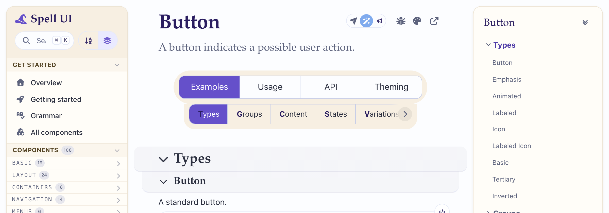
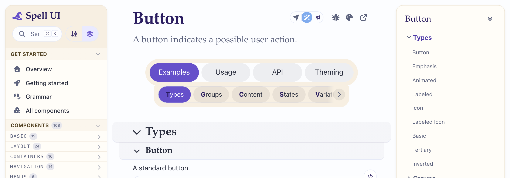
Dark
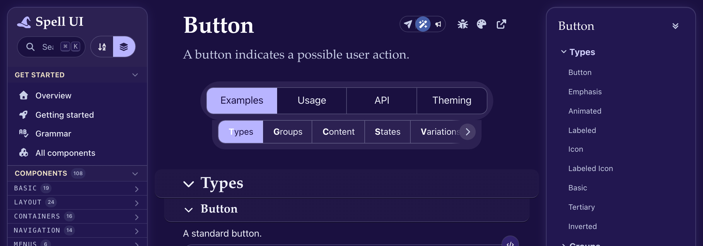

Light
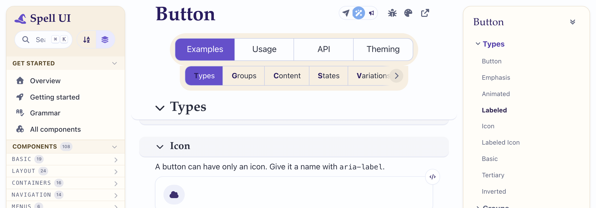
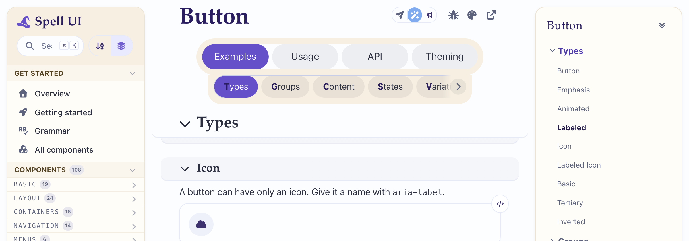
Dark
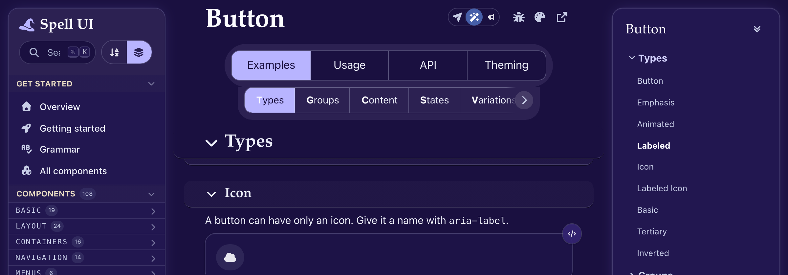
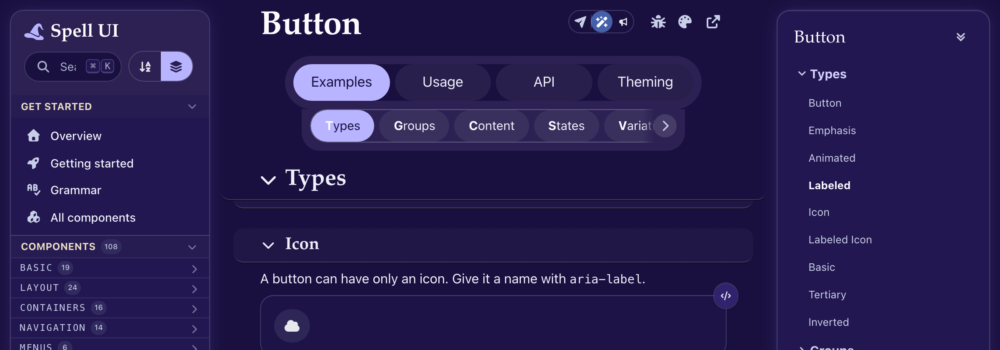
Light
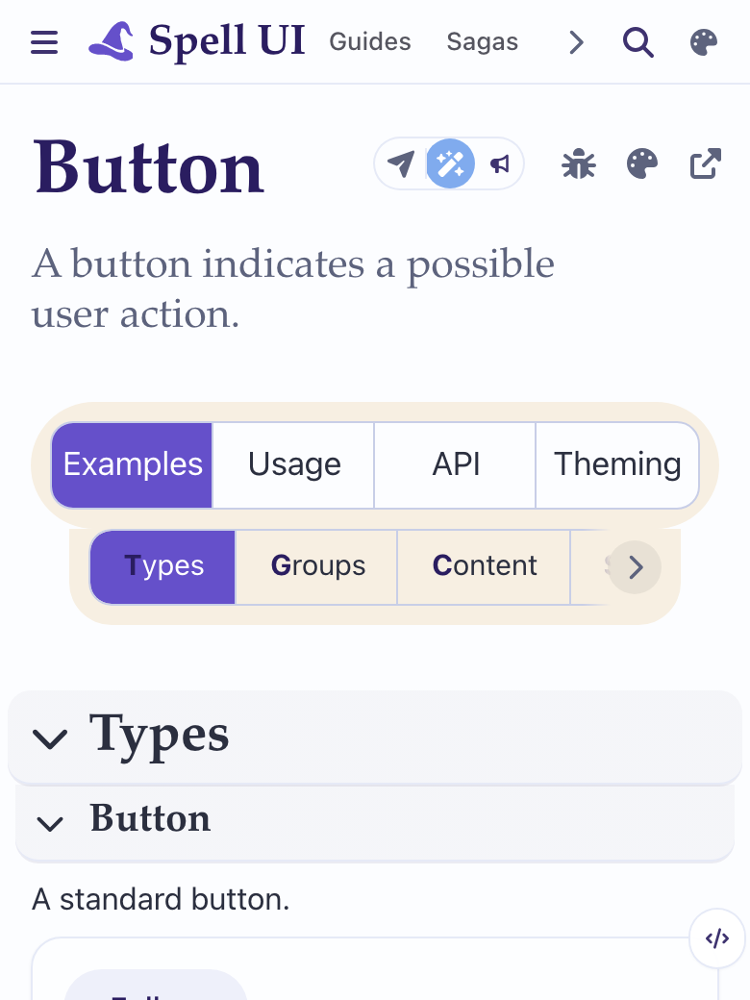
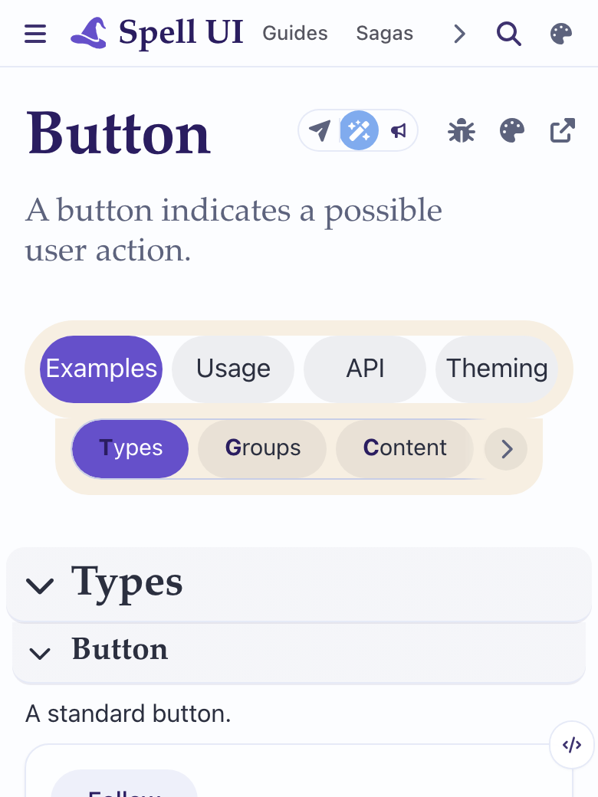
Dark
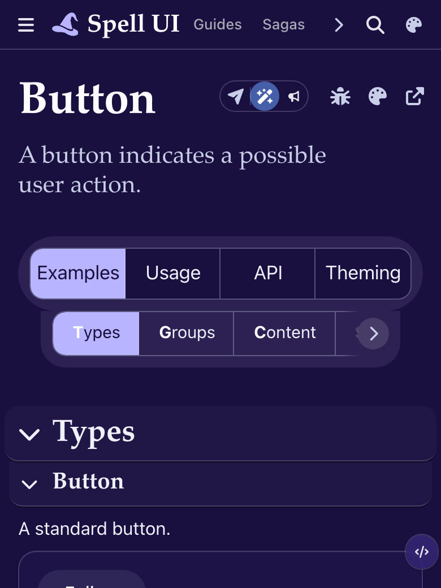
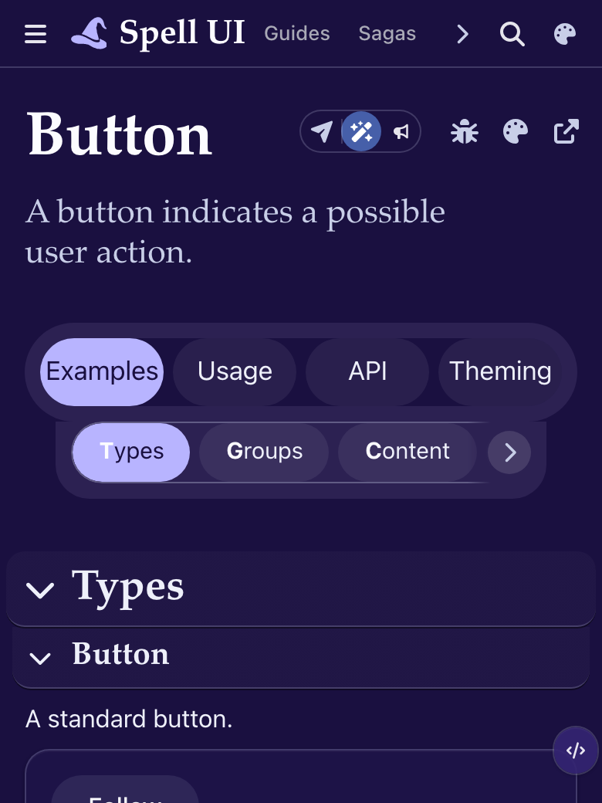
Light
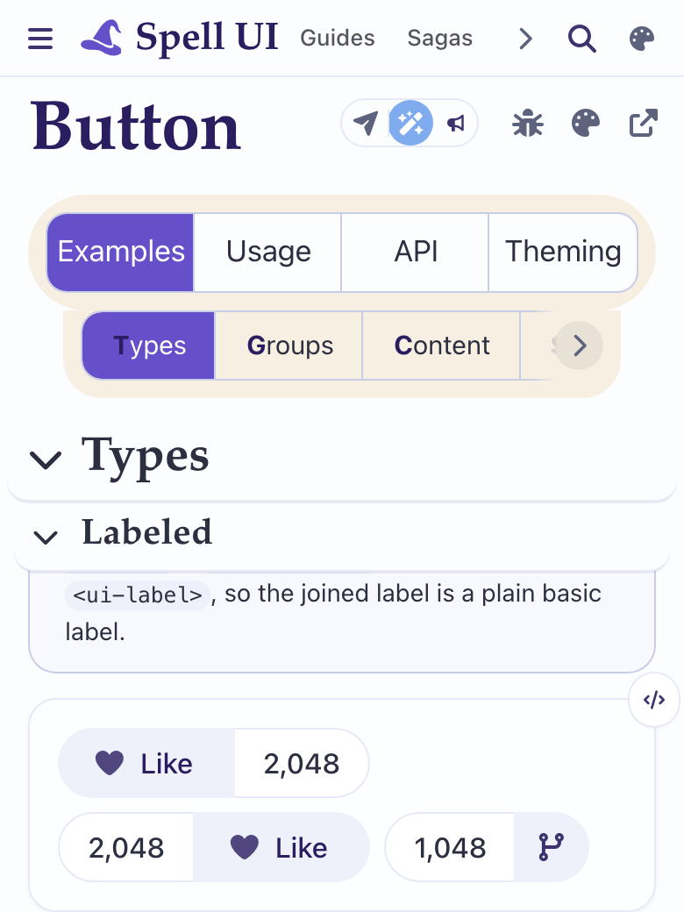
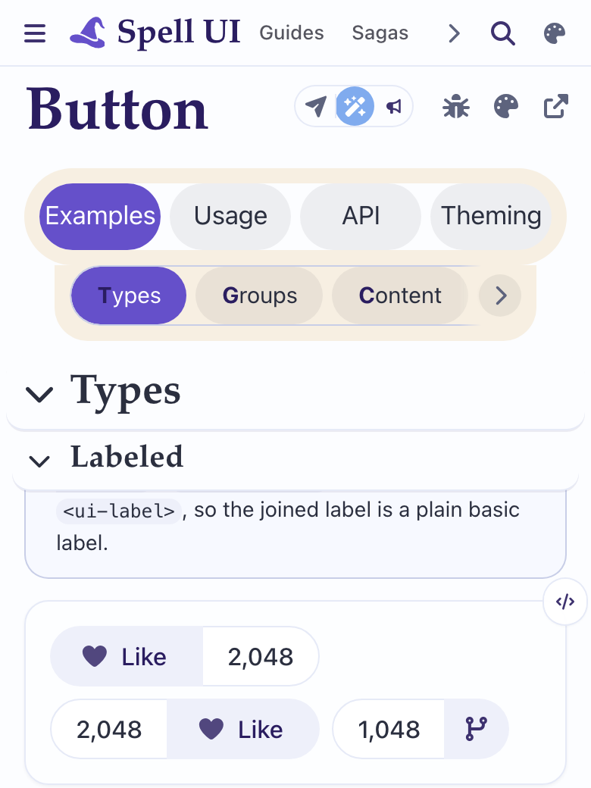
Dark
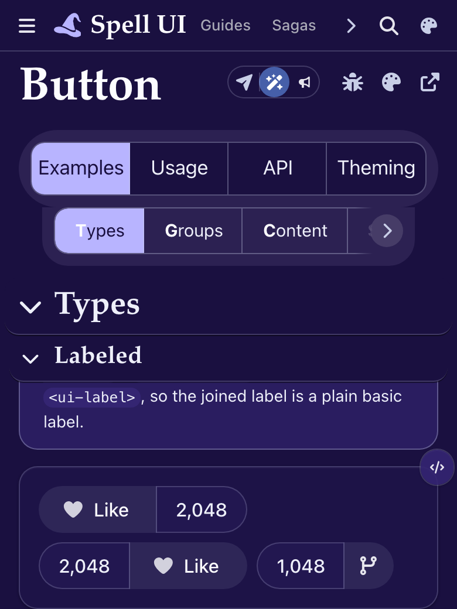
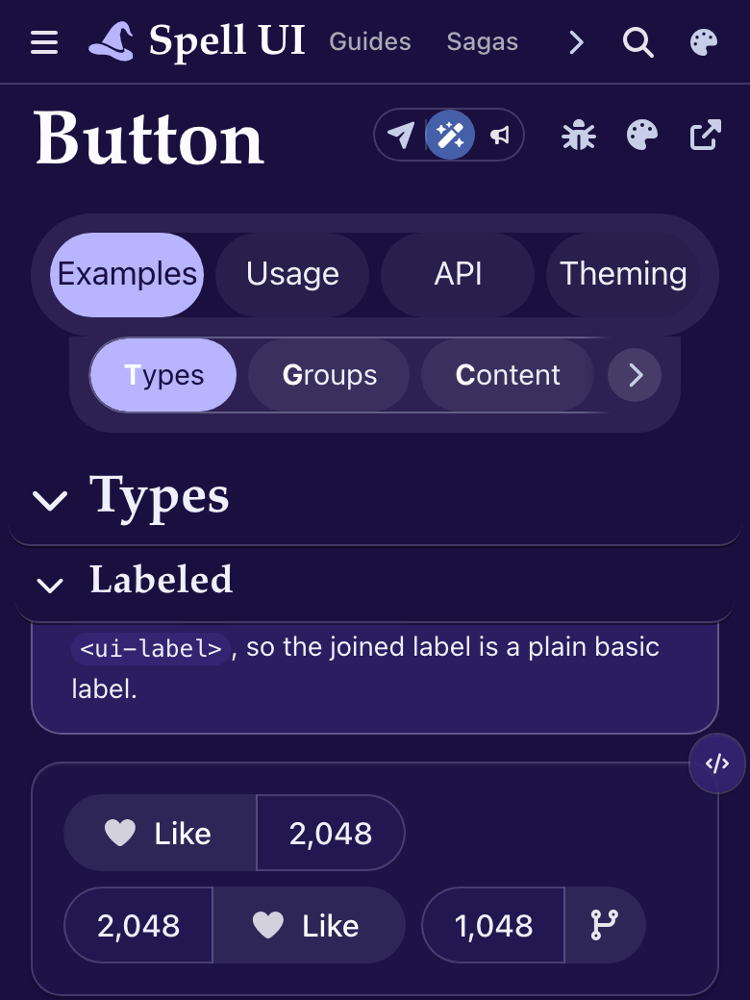
-
It's CSS only. One block of about 10 lines in the site's own stylesheet,
site.css: it sets the segmented look's own settings (gap, pill corners, no lines between, a faint fill on each tab). - No page needs touching. The 80 Spell UI components pages, the 10 brand pages and the page template keep their markup as it is.
- Who else gets it: every page with these tabs, which is Spell UI's components pages and the brand's. Epic UI's and App UI's pages share the same site bundle, but they have no tabs, so nothing changes there.
- Phone width: the four tabs still fit at 390px. Each one is a bit narrower, since the gaps take about 18px. The row under them still scrolls sideways, with its arrow.
-
The row under the tabs and the stuck tabs: nothing broke. The two rows still read as
one panel, and the panel still sticks and hides the page under it.
- One loose end in the mock: the row under the tabs keeps a thin outline round its whole row, from the toolbar's own sheet (spell-epic's). Building it for real would drop that outline too: one more line.
- A risk to watch: the tabs' fill and outline are tuned in a theme's settings (the Spell brand theme already draws pill tracks). Setting them in the site's stylesheet wins over every theme on these pages, so a theme can't give the page tabs another look.
Pills. It's cheap, all in one stylesheet, and easy to undo.
- The segmented box reads as one form control. Pills read as separate places to go, which is what these tabs are.
- The row under the tabs stops looking like a second copy of the same box: both are now plain chips, told apart by size.
- It matches the pill shape the brand theme, the page header's icon group and the buttons already use.
- The cost: each tab is a little narrower on a phone, and the glass panel now has some empty glass in the gaps.
What works, or doesn't, in the segmented strip (the “Before” pictures).
What works, or doesn't, in the pills (the “After” pictures).